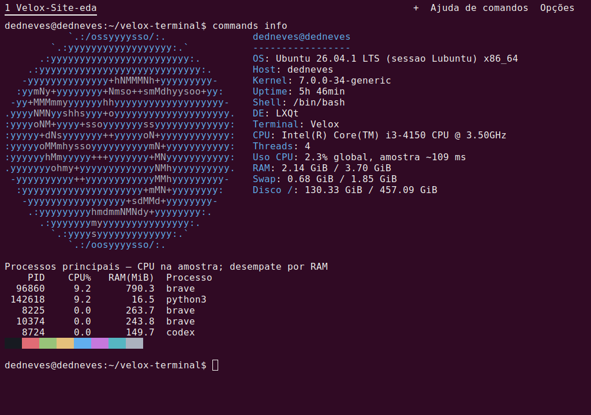
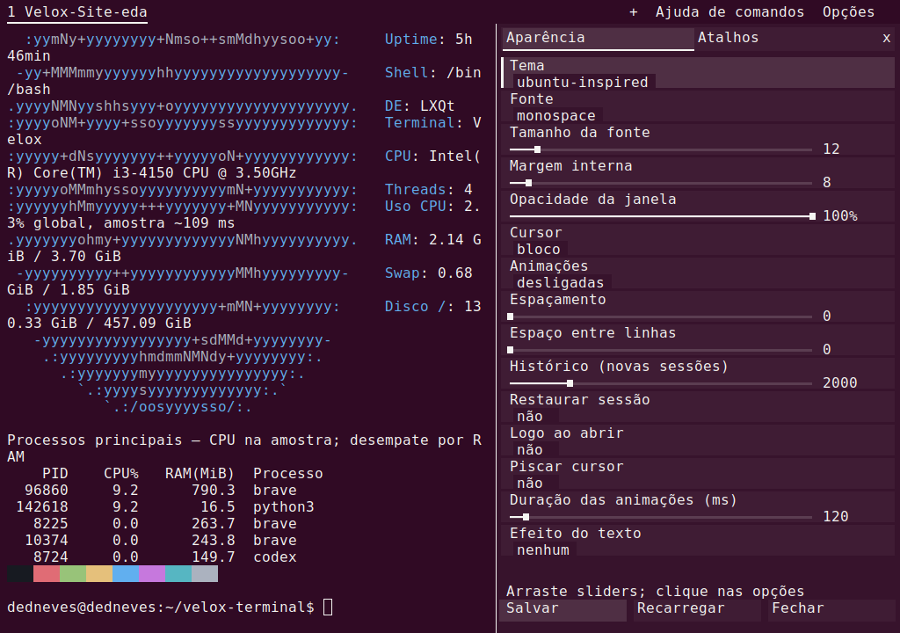
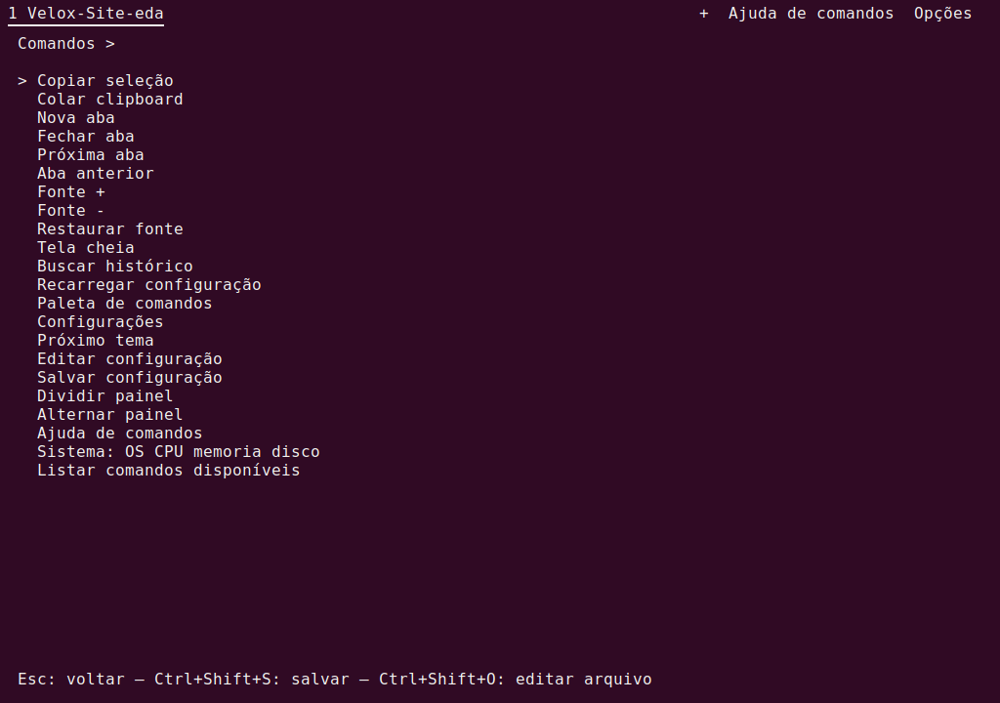
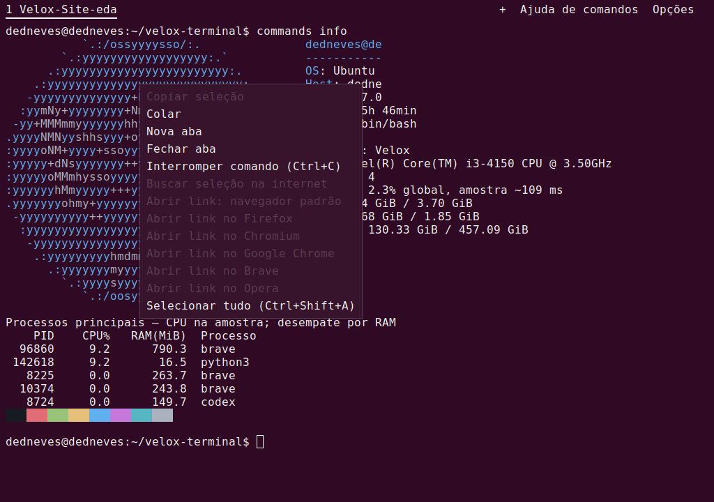

Uma janela. Mais sessões.
Abra abas no botão +, use divisões e alterne entre sessões sem sair do terminal.
Ctrl + Shift + TNATIVO PARA LINUX / C + X11
Um terminal direto ao ponto. Abas, temas e ajustes na mesma janela, com um modo mínimo para quando você só quer trabalhar.
Ubuntu · Mint · Lubuntu · Debian Linux x86_64

FEITO PARA O SEU FLUXO
Execute seu shell de sempre. Personalize o que faz diferença e desligue os efeitos quando preferir.
Abra abas no botão +, use divisões e alterne entre sessões sem sair do terminal.
Ctrl + Shift + TFonte, temas, opacidade do texto e atalhos em um painel integrado. Salve seus ajustes para a próxima abertura.
Ctrl + Shift + ,Restaure abas, diretórios, shells e divisões. O texto anterior também é salvo. Os shells são novos; processos não sobrevivem ao reboot.
[session] restore = trueO modo mínimo desliga animações, transparência e restauração.
velox --minimalVELOX 0.3.3 NA TELA
Janelas da versão disponível para download, capturadas diretamente pelo X11.



Pixels originais da janela, sem redesenho ou simulação.
Origem das capturas ↗COMMANDS HELP
Busque comandos e atalhos. Confira o que cada um faz antes de executar. Copiar não executa nada.
Logo da distro, CPU, RAM, disco e processos principais. O coletor só roda quando você chama.
commands infoAbre a ajuda de comandos; commands list mostra a lista completa do helper.
commands helpSem animações, sem transparência e sem restauração automática de sessão.
velox --minimalO painel de aparência e atalhos abre dentro da janela do terminal.
velox --settingsMostra os valores carregados do TOML, incluindo restauração e opacidade.
velox --dump-configMostra RAM e swap com unidades legíveis. Incluído em procps.
free -hLista informações do processador e threads. Incluído em util-linux.
lscpuUma lista ordenada pelo percentual de CPU do ps; esse valor é a média de vida do processo.
ps -eo pid,pcpu,pmem,comm --sort=-pcpu | headMostra uso e espaço disponível nos sistemas de arquivos montados.
df -hLista tamanho, permissões e data de alteração no diretório atual.
ls -lahMostra o diretório de trabalho do shell atual.
pwdProcura imagens .iso no diretório atual e em suas subpastas.
find . -type f -iname '*.iso'Nenhum comando encontrado. Tente “memória”, “CPU” ou “arquivos”.
Ctrl + Shift + C/V copiar / colar Ctrl + Shift + T nova aba Ctrl + Shift + P paleta Ctrl + Shift + S salvar ajustes
PRONTO PARA O PRÓXIMO COMANDO
Download direto, sem cadastro. Linux x86_64, X11 ou XWayland. A instalação com apt resolve as bibliotecas necessárias.
Escolha o pacote. O navegador baixa o arquivo; instale e abra no Linux com os comandos abaixo.
Depois de baixar, abra o terminal na pasta do arquivo:
sudo apt install ./velox-terminal_0.3.3_amd64.deb
veloxRequer libX11, Xft, Fontconfig, libvterm e Python 3 já instalados. Não é um AppImage.
tar -xzf velox-linux-x86_64.tar.gz
./velox-linux-x86_64/bin/veloxEste build requer glibc ≥ 2.38 e libvterm ≥ 0.3. Para distribuições anteriores, baixe e compile o código-fonte.
AJUDA RÁPIDA
No painel Opções, ative “Restaurar sessão” e clique em Salvar. Feche normalmente a janela. Na próxima abertura, o Velox recria abas, divisões, shells e diretórios. Fechar a última aba também conserva seu último estado. O texto visível e o histórico retido são salvos como UTF-8, limitados a 512 KiB por painel. Cores e modos de programas antigos não são retomados, nem os processos. Comandos salvos nunca são reexecutados. O modo --minimal e comandos -e não usam essa restauração.
“Opacidade do texto” mistura a cor das letras com o fundo da célula, inclusive cores ANSI. Não precisa de compositor. “Opacidade da janela” controla a transparência da janela inteira e precisa de um compositor no desktop. Use 100% para manter o contraste máximo.
A roda preserva a seleção. Arraste até a borda para rolar automaticamente ou use Shift+clique para estender. Ctrl+Shift+A seleciona o histórico retido. Em aplicativos que capturam o mouse, mantenha Shift pressionado. Clipboard acima de 60 KB ainda não tem transferência INCR.
O renderer atual usa X11/Xft e precisa de XWayland numa sessão Wayland. Esta versão não possui renderer Wayland nativo.
Não fazemos essa afirmação. Os testes verificam funcionalidades e os benchmarks locais documentam seu ambiente. Startup, RAM e latência precisam ser medidos na máquina que você usa.